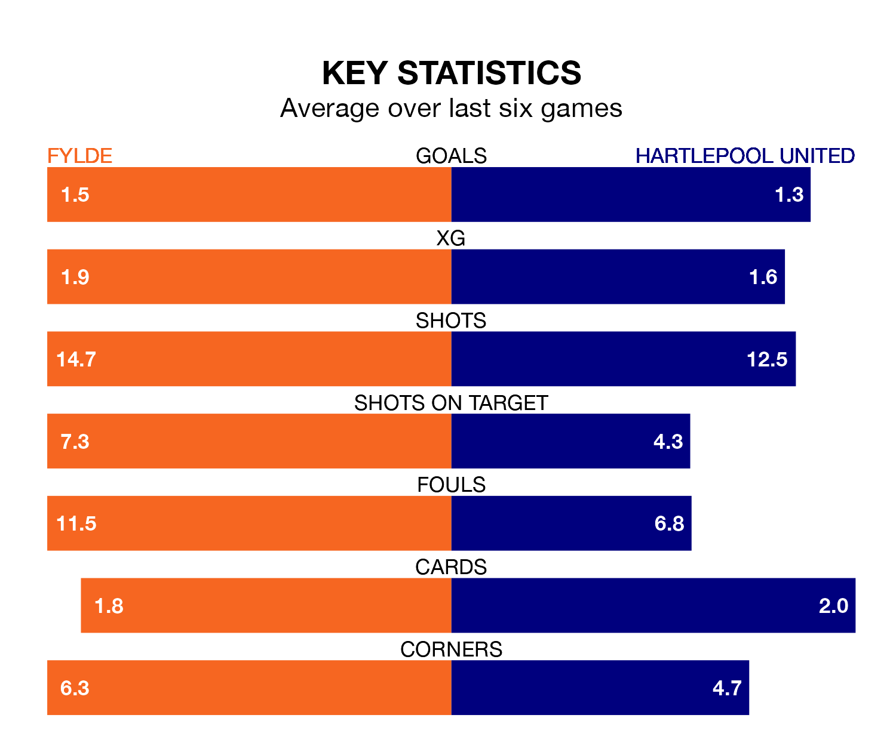

Struggling Fylde face Hartlepool United at the Mill Farm Stadium on Tuesday looking to build on a win in their last league outing.
After securing all three points with a 2-0 victory over Rochdale on January 1, the Coasters sit 23rd in National League.
They travel to play a Hartlepool side 16th in the standings, who also won their last match, 2-1 against Oxford City, on Saturday.
With 43 goals in 27 games so far this season, Hartlepool are scoring more than average in the league with 1.6 goals per game. But they are conceding more than average too, letting in 53 goals at a rate of 2.0 per game.
Fylde, meanwhile, are below average scorers, with 1.4 goals per game, compared to a league average of 1.5. They have conceded 1.9 goals per game.
The Coasters are in disappointing form in National League, with one win and three draws from their last six games.
With a win and a draw over that period, United's form is slightly worse – they have taken four points from 18, compared to the home team's six.
In Emmanuel Dieseruvwe, Pools have one of the league's sharpest shooters so far this season. He has notched 13 goals in 23 appearances, to sit fifth in the scoring charts.
Fylde's top scorers, with six goals each, are Jonathan Ustabaşı and Nicholas George Haughton.
Updated: 11:29, 08/01/24